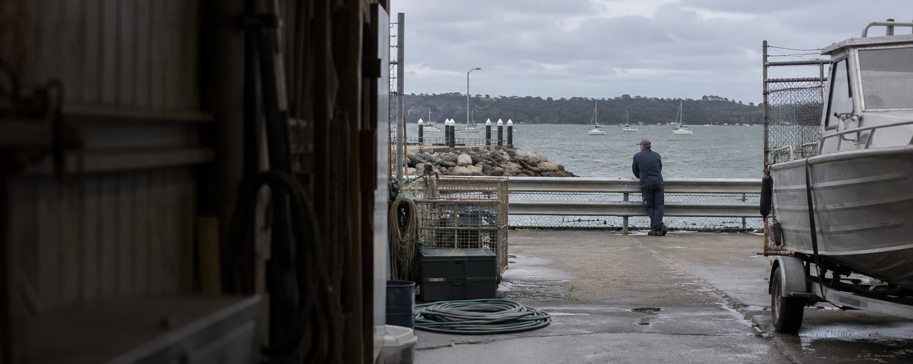

A clearer path to care.
Make it easier for people to find your service, understand the next step and get the information they need. Connect that experience with the workflows behind it.
- Service websites
- Referral journeys
- Administrative workflows

Experience across Australian businesses, essential services and industry.
Explore our industriesGood technology starts with understanding the work. Our team brings cross-sector experience to the priorities, systems and people that shape your business.
Make it easier for people to find your service, understand the next step and get the information they need. Connect that experience with the workflows behind it.
Support the teams coordinating care with clearer information, simpler administration and systems that fit how they work. Build adoption into the change from the beginning.
Our team brings experience in energy and resources. We connect that operational perspective with software, project delivery and change, working alongside your technical specialists.
Make documents, equipment information and operational activity easier to find and coordinate. Build digital tools around the people managing the work, in the office and on site.
Connect the experience of coaches, clients and members. From a first enquiry to everyday service delivery, create software that people can use with confidence.
Connect the digital storefront with the practical work behind it. Help customers find what they need and give your team a clearer way to manage content, orders and day-to-day activity.
We work with your leaders, teams and technology partners to connect business priorities with technical delivery and adoption.
See how we can helpTell us what you’re working on and where you need help. You don’t need a finished brief.